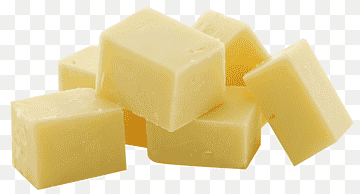
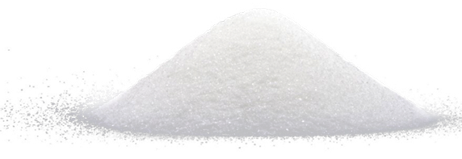
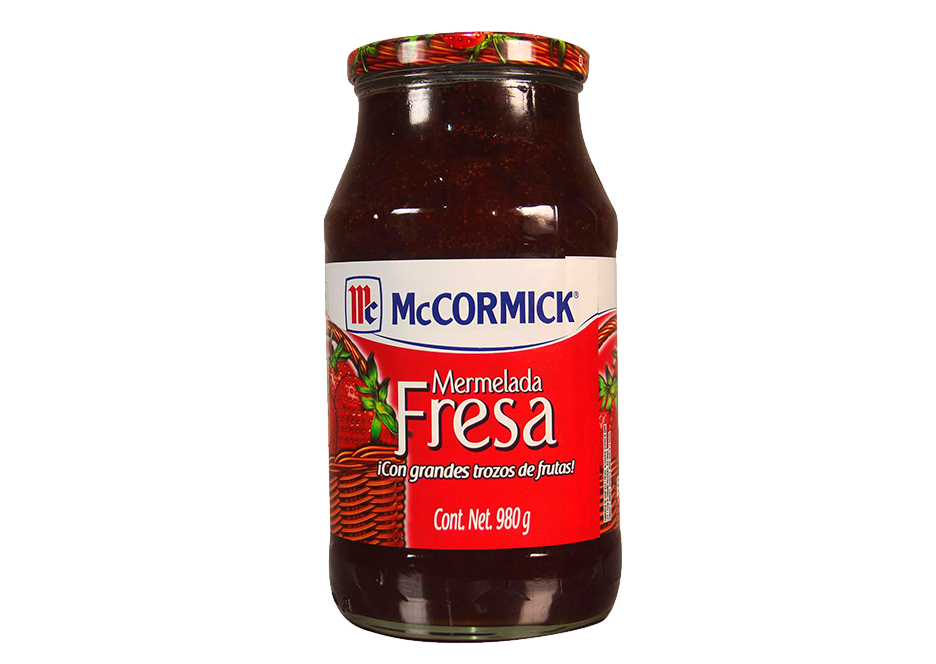

Buñuelos Rellenos con Mermelada
Ingredientes:
- 1 taza de agua
- suficiente de cáscara de limón, sin la parte blanca
- 1/2 tazas de mantequilla, en cubos 
- 1 cucharadita de sal
- 1 1/4 tazas de harina
- 1 cucharadita de polvo para hornear
- 4 huevos

- suficiente de aceite vegetal, para freír
- 2 tazas de azúcar 
- al gusto de Mermelada de fresa y guayaba McCormick® sabores de México, 270 g 
Procedimiento:
- Coloca el agua en una olla junto con la cáscara de limón,
la mantequilla, la sal y lleva a hervor a fuego medio.
Una vez que tenga una burbuja pequeña, baja la flama y retira la cáscara de limón.
- Agrega la harina y el polvo para hornear de un solo golpe y utiliza una palita de madera
para mezclar constantemente hasta obtener una masa compacta y uniforme; no dejes de mover
hasta que la obtengas.
Una vez lista, retira del fuego.
- Incorpora los huevos uno a uno mientras continúas moviendo la mezcla para que se enfríe,
ya que esto ayudará a que la temperatura no afecte al huevo y se cocine antes.
- Apoyándote de dos cucharas, vierte un poco de la mezcla en una sartén con suficiente aceite
vegetal caliente; notarás cómo la mezcla comienza a obtener una forma circular y crecerá.
Mantén los buñuelos a temperatura media-baja hasta que la bolita duplique su volumen y
la masa comience a romperse, pues esto es señal de que el buñuelo comienza a ahuecarse.
Retira del aceite y escurre sobre papel absorbente.
- Aún caliente, baña las bolitas de buñuelo en azúcar para cubrir muy bien y
haz una abertura lo suficientemente grande para rellenar.
- Rellena las bolitas de buñuelo con la Mermelada de fresa y guayaba McCormick® sabores de México y sirve inmediatamente.
Receta obtenida de :